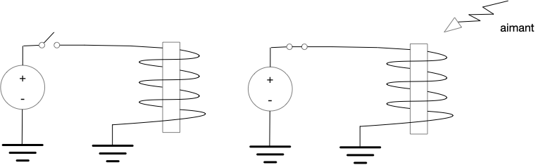
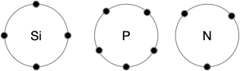
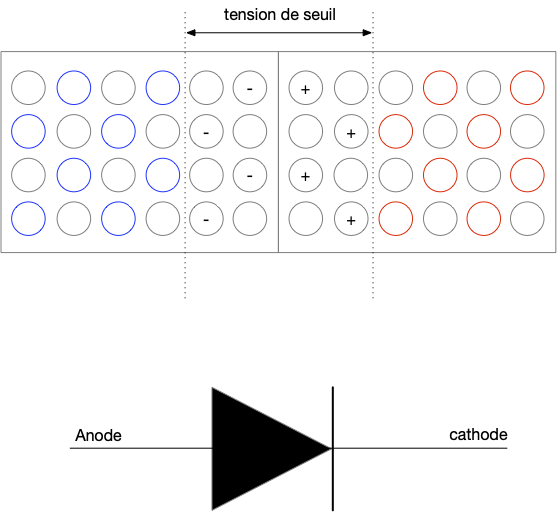

Bases physiques et de l'électronique
Pour pouvoir
Relais
Mécatronique.
Le O et le 1 dont on va avoir besoin va être du courant.
Base d'un relais est un électro-aimant :

On lui adjoint une diode (voir plus bas pour ce que c'est) pour dissiper la charge lorsque l'on coupe l'alimentation (le circuit se ferme alors sur la diode et permet de limiter la tension à la tension de la diode (typiquement .7V) et de dissiper l'énergie emmagasinée dans la bobine) :

Enfin le mécanisme de relais en lui-même :

- sans courant en A une barre de métal fait une connexion entre com et repos,
- si on alimente A, l'électro-aimant fait baisser la barre et elle connecte maintenant com à travail.
Ingénieux, non ! C'est Shannon qui a le premier montré la faisabilité de créer un réseau booléen en utilisant des relais.
Par exemple une porte NON (NOT) :
- générateur de courant en com
- entrée : A
- sortie : repos
Ou une porte NON-ET (NAND) :
- entrées : com et A
- sortie : travail
Transistor à jonctions
électronique analogique.
N'étant pas électronicien et encore moins physicien, je vais rester à la surface de l'explication. Je suppose juste que vous savez ce qu'est une charge et une tension.
Semi-conducteurs : Diode PN
La base de la jonction PN est un cristal de silicium dopé (avec ajout de) au Bore, Aluminium ou Gallium pour la couche P et au Phosphore, Arsenic ou Antimoine pour la couche N.

Comme vous le voyez, les atomes de Silicium ont 4 électrons sur leur couche de valence, les atomes de type N en ont 5 et ceux de type P, 3.
Un cristal est formé d'atomes qui si partagent les électrons sur la couche de valence :

Un couche de Valence aime avoir 8 électrons. Si elle en a moins elle va avoir tendance à en attraper un autre, si elle en a trop elle aura envie de les donner. Pour nos cristaux :
- un atome de silicium entouré d'autres atomes de Silicium sera stable,
- un atome de type P entouré d'autres atomes de Silicium aura un électron en trop,
- un atome de type N entouré d'autres atomes de Silicium aura un électron en moins.
De façon globale la charge d'un cristal est de 0.
Lorsque l'on colle un cristal dopé en N avec un cristal dopé en P on obtient une diode :

À la jonction entre le cristal N et le cristal P les électrons surnuméraires de la couche N se déplaceront vers les places libres des cristaux de la couche P. Ceci ne peut pas prendre tout le cristal car ajouter ou supprimer un électron à une couche pleine (8 électrons) est bien plus coûteux que d'aller d'une couche trop pleine à une couche trop vide.
Au total la charge du cristal est toujours nulle, mais dans la région du milieu ces déplacements d'électrons ont généré une différence de potentielle (une charge + lorsqu'un électron est parti et une charge - lorsqu'un électron est arrivé)qu'on appelle tension de seuil (typiquement 0.7V pour une diode au silicium).
Si on met une tension, les électrons sont attirés vers les
- que dans un sens
TBD principe des semi-conducteurs TBD jonction NP.
Transistors NPN
Un transistor à jonction est un amplificateur de courant.
C'est le transistor utilisé pour les circuits. Les bascules se font en tension (+5V) mais doivent être converties en courant (via des résistances pull-up ou pull-down) puisque la commande d'un transistor à jonction est le courant de base.
TBD PNP et NPN
TBD schéma en utilisant
TBD résistance et courant
Transistor à effet de champ
numérique MOSFET : NMOS et PMOS
TBD ohmique si dans un circuit, saturation que dans les effets transitoirs TBD que des tensions. Sans courant en régime stable
- https://www.youtube.com/watch?v=docgmTprR5o
- https://www.youtube.com/watch?v=wGrkczNxEh0&list=PLQms29D1RqeKb21acQ481DRiDH28sE0vN&index=1
- https://www.youtube.com/watch?v=1rZyGL1K5QI
- https://www.youtube.com/watch?v=HjneAhCy2N4
en français : https://www.youtube.com/watch?v=31hyLr07obo en anglais :